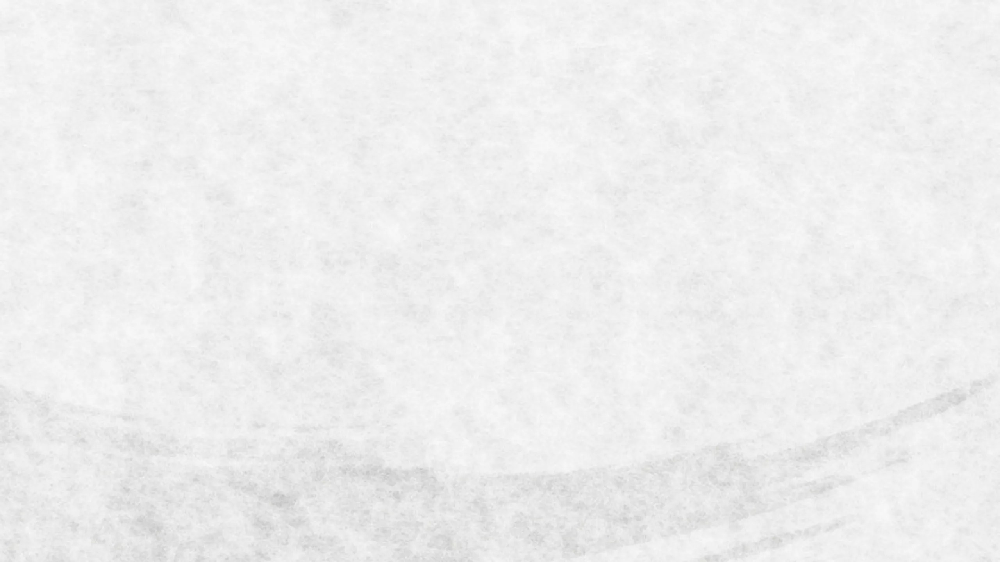
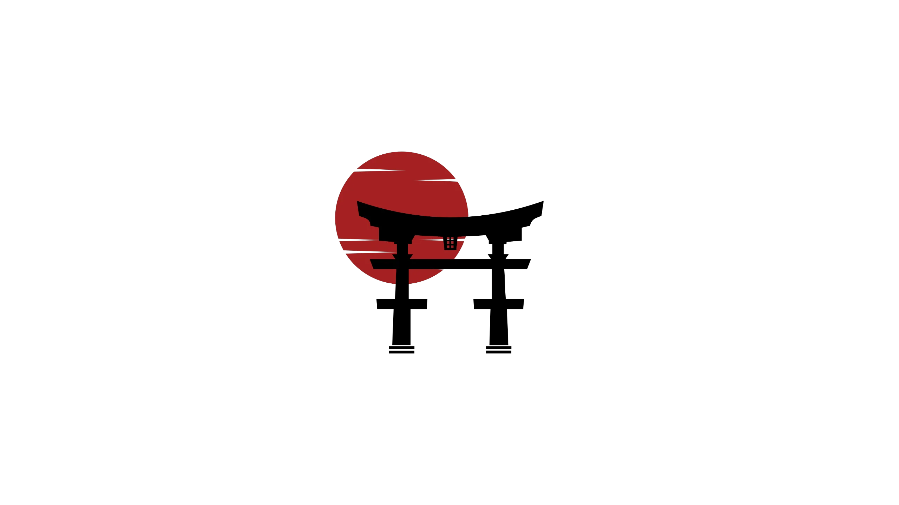
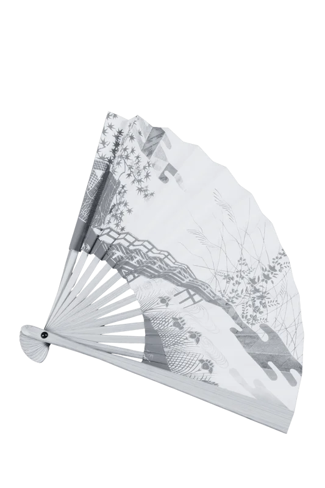
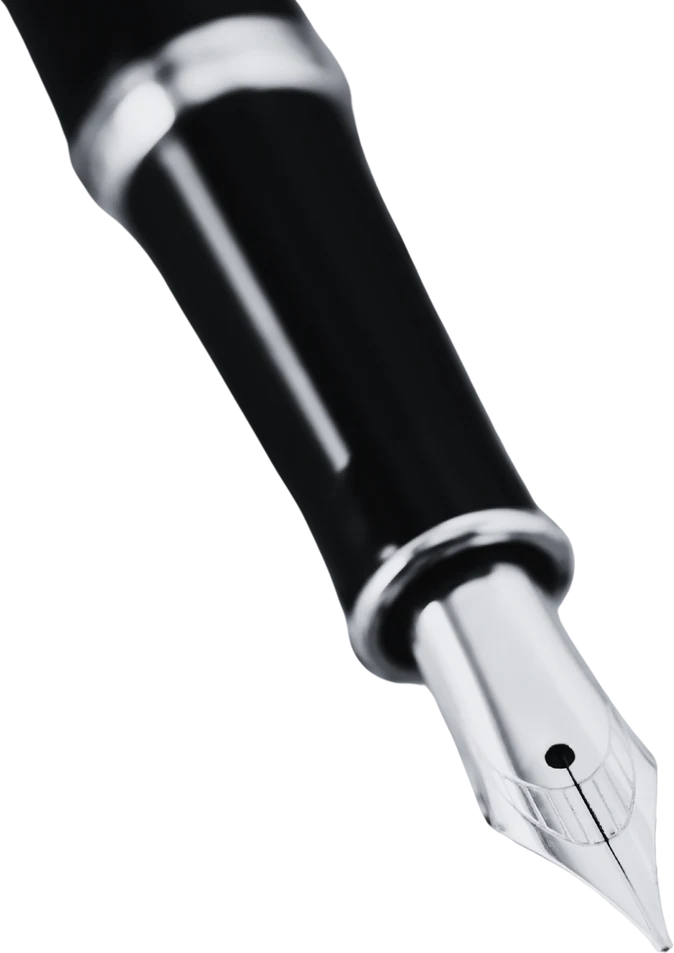

Bilgelik hali
İnsanın kendi karakter özelliklerini tanıyarak ait hissedeceği yaşam senaryosunu kurma becerisi. Modern insanı, mazeretlere sığınmadan tüm özellikleriyle sorumluluk alacağı bir zihin yapısına ulaştırır.



Misogi Waza · Practice & Education
Bugün kim olmak istiyorsan,
o amaca uygun yaşa.

一 Eğitim Felsefesi
Wiseandfit eğitim felsefesinin amacı bilgeliği ve fit olma halini ortaya çıkarmaktır. Gücünü Japon felsefesinin kadim öğretilerinden ve batı felsefesinin yöntemlerinden alarak hibrit bir yaklaşım sunar.
İnsanın kendi karakter özelliklerini tanıyarak ait hissedeceği yaşam senaryosunu kurma becerisi. Modern insanı, mazeretlere sığınmadan tüm özellikleriyle sorumluluk alacağı bir zihin yapısına ulaştırır.
Bu yolculukta değişen yaşam koşullarına uygun beden, zihin ve ruh yapısını koruma becerisi.
Wiseandfit felsefesi insanın bugününü şekillendirme çabasıyla temellendirilmiştir. Modern insanın tüm gücünü içinde bulunduğu güne odaklamasını ve bugün kim olmak istiyorsa bu amaca uygun yaşamasını amaçlar.
二 Misogi Waza
“Misogi, nefes alamaz hale gelmiş ağaçları yosunlardan temizleme işlemidir.”
Wiseandfit felsefesinin yaşatılması misogi waza pratikleri ile sağlanır. Tüm uygulamalarımızın temelini oluşturan Japon eğitim sisteminin ana amacı, yaşam mücadelesi veren insanın tüm nitelikleriyle (beden / zihin / ruh) hafiflemesini sağlayarak bilgeliğe açık fit olma halini yaşamasıdır.
Bu işlem Japon savaş sanatları felsefesinde insan eğitiminde kullanılmaktadır. Bu bağlamda eğitimlerimizin ana hedefi modern insana daha fazla yeti kazandırmak değil, yeni yetilere yer açmak için ağırlıklarından kurtulmasını sağlamaktır.
三 Kurumsal Eğitim Programı

Çatışmasız İlişki Yönetimi ve Engel Aşma Stratejileri
Gelişim Odaklı Yaşam Tarzı ve Uzmanlaşarak İyileşme
Zihinsel Esneklikle Yaşam Yönetimi
Metabolizmaya Uygun Yaşam Tarzı
Modern İnsanın Anlam Arayışı ve Zaman Felsefesi
Bazı kurumsal referanslar

四 Eğitmen
Eğitmen & Yazar LinkedIn
Wiseandfit eğitim felsefesinin kurucusu Cihan Karaoğluol’un yolu 2007 yılında bir Japon savaş sanatları eğitmeniyle kesiştiğinde tüm yaşam planı değişti ve Amerika Birleşik Devletleri’ndeki eğitim tapınağına yerleşti.
Nippon-Kan Aikido Organizasyonu kurucusu Gaku Homma Kancho’nun Uchideshi’si (yatılı öğrencisi) olarak aikido, kenjutsu ve jojutsu eğitimine başladı. Budo ve Zen felsefesiyle yıllarca eğitim alarak Nippon-Kan’ın uluslararası eğitmeni olmaya hak kazandı.
Yurt içinde ve yurt dışında askeri birlikler, polis teşkilatları, sivil organizasyonlar ve kurumsal firmalara davranış odaklı eğitimler verdi. Amacı: “İnsanların yaşam mücadelesini kolaylaştırmak.”
Metabolik sağlığın karar ve davranış üzerindeki etkisini görerek Prof. Dr. Ceyhun Dizdarer’in Metabolik Fitness yaklaşımını Türkiye’ye getirme projesinde görev aldı; bugün kurumsal alanda ve bireysel danışmanlıkla metabolik koçluk yapıyor.
Doğu ve batı felsefelerini daha iyi aktarabilmek için felsefe alanında akademik eğitimini tamamladı.

Kitapları
五 Eğitimlerden Kareler ve Diğer Hizmetler
六 İletişim